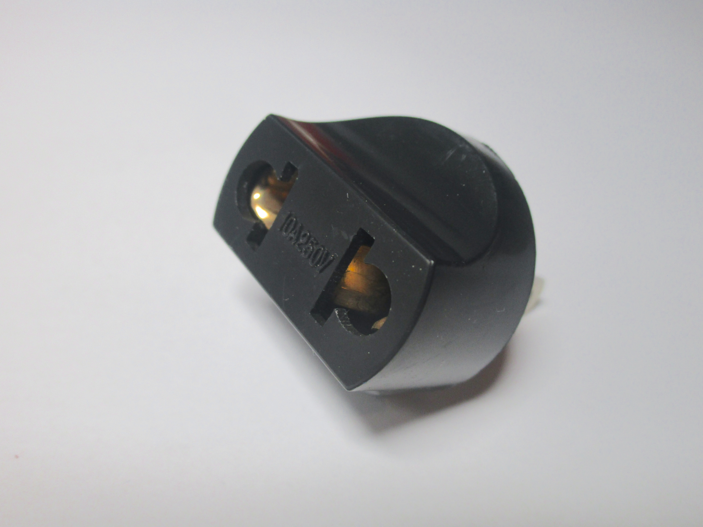
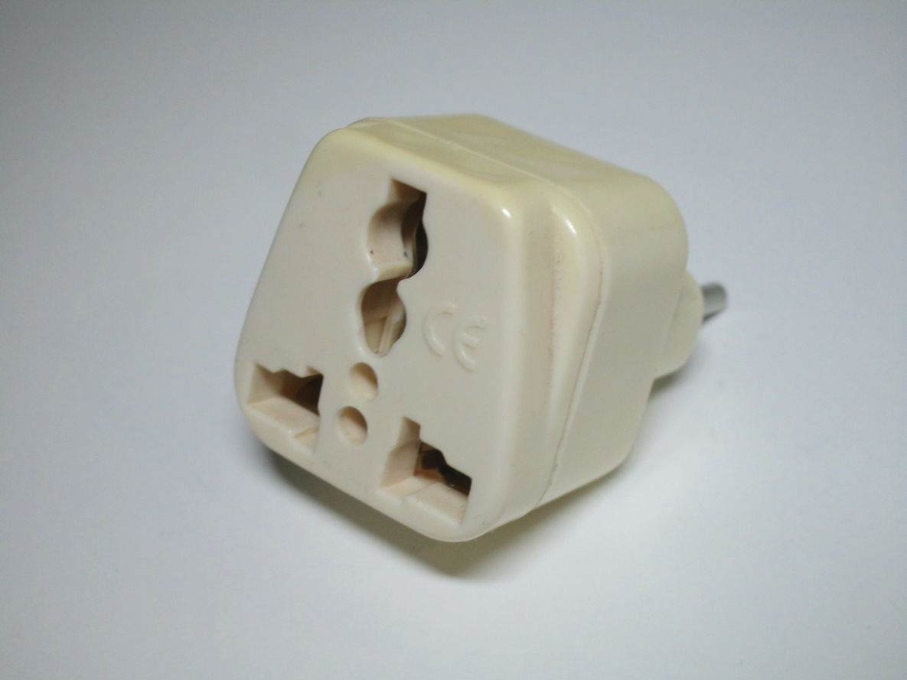
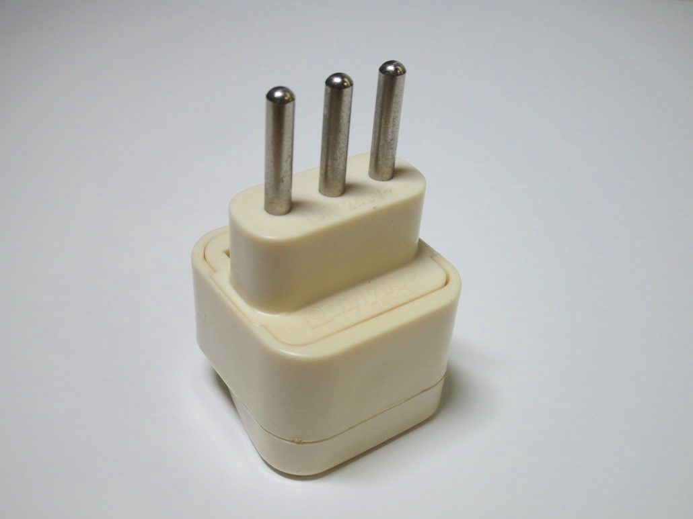
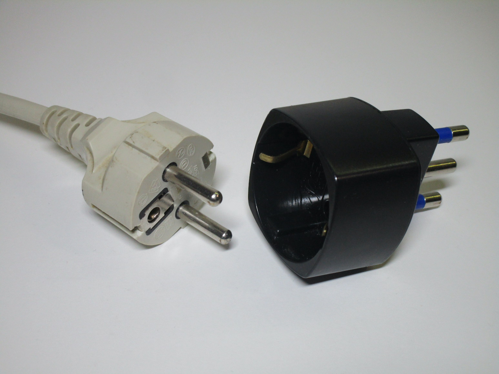

Travel adaptors
Dangerous travel adaptors
Travel adaptors are notoriously unsafe - generally that's because they're trying to be as cheap as possible to manufacture, while being compatible with the most plugs; additionally, they often don't conform to any standard, which can lead to either the plug or (more often) the socket part being considerably less reliable, and with less safety features, than normal power sockets.
Unfortunately, this means that they can be quite dangerous. The most common flaws are bad connections (due to them trying to be compatible with as many plugs as possible), which could then pose a fire risk, lack of an earth connection, lack of sleeving on the pins, and lack of protective shutters.
EU to US 2-pin adaptor
This is a typical example of a dangerous traval adaptor: it converts either a European or American plug into a North American (non-polarised) one. While it's quite bad that this can theoretically be used to bypass the earth prong on an American plug, that's likely the least problematic of its issues; the socket on it is quite dangerous, as it lacks any sort of safety shutters, while having a very large opening, with the metal contacts easy to touch even just with a finger.
The socket also makes a very poor connection with almost any plug that's used with it and doesn't have anything to push the contacts back together after a plug has been removed, which can make the connection even worse over time and possibly even cause overheating. This definitely puts into question its claimed rating of 10A 250V.
{kind=link}

The infamous "deathdaptor"
This style of travel adaptor is notorious online for just how terrible it is, so much in fact that it's generally referred to as the "deathdaptor". It presents all of the possible flaws you could possibly find with these types of devices - first of all, the holes on it are rather large in order to accomodate different types of plug, and rather poorly built, which can easily lead to poor connections which in turn poses a fire risk.
Additionally, the holes don't have any shutters on them, which makes it easy for someone to stick a metal
object inside and receive a shock, and more importantly it allows for the user to connect a plug in a dangerous
way, for example with the earth pin connected to live, which is extremely dangerous.
The holes on the adaptor aren't even made properly, I tried connecting a 10A type L plug to it, as it clearly
features holes for the earth pin on it, and it just got jammed inside, either due to the shoddy constrution
or the holes not being designed for the right pin thickness in the first place.
And finally, the pins on the plug side (which in this case are for use in Italy) aren't even sleeved. Sleeved pins have been mandatory on plugs for ages here, so, if there was any doubt about the questionable nature of these adaptors, this confirms that they simply aren't made with any safety regulation in mind.
 {kind=link}
{kind=link}
Other designs can also be dangerous
Looking online at other travel adaptors reveals that many of them share the same flaws. Now, it's understandable that these adaptors aren't designed for permanent use and thus they may not have all the safety features of normal plugs and sockets, but some of the flaws I've seen with these are just inexcusable.
A better design
So, what do you do if you need to buy a travel adaptor? Well, what I'd recommend is trying to find something like
this:
This is a Schuko to Australasian travel adaptor, and the key feature of it is that it only has the socket for your
specific country. This is extremely important in the case of Schuko devices, since they rely on the socket
itself for the earthing and for protection against accidental contact with the live pins (the socket is recessed
to prevent this, but that doesn't happen with the cheaper universal travel adaptors).
The only thing I don't like about it is the fact that it doesn't have protective shutters, but that's not a big
problem.
Plus, it can be helpful to look up the plug type in use in the country you're staying in, to make sure that the
travel adaptor is compatible and isn't missing any features (for example, as seen earlier, some Italian travel
adaptors lack sleeving on the pins).
{kind=link}
{kind=link}
Useful tips for people travelling to Italy:
First of all, let's start with the obvious thing: if you're coming from a country that uses 120 (or 100) volts, you need to be sure that the devices you want to connect over here can also run on 230V. This is practically guaranteed to be the case for things like phone and laptop chargers (though it's worth checking just in case), but won't be the case for things like hairdryers - thankfully most hotels and apartments generally have one already so that shouldn't be a big issue.
If you're visiting from another European country, you'll be fine as long as your devices use Europlugs, as those are compatible with Italian sockets - these are commonly used for phone chargers, as well as some laptop chargers. If you have something with a Schuko plug, however, you'll likely have to pick up one of these adaptors, as Schuko sockets aren't always found in Italian homes:
{kind=link}

This is a 16A Schuko to type-L adaptor; you might also find 10A versions, and these will most likely work fine for most things, with the added benefit of being able to plug them into 10A type-L sockets, though generally the 16A adaptors are more commonly found, and are useful if you for some reason need to connect more power-consuming devices.
If you're visiting from a country that uses a different standard of plug completely, you'll have to get a travel adaptor. This is where things can get scary, as a lot of travel adaptors out there aren't particularly safe. However, it's still possible to find some decent ones out there. If picking one with Italian or Europlug pins keep in mind that they have to have protective sleeving on them - an adaptor without that is a sure sign of not being compliant, and will likely have other problems as well.
Generally, if possible, try to find an adaptor that just has one style of socket at the other end . such adaptors exist for UK and US plugs. Some of them may also have USB ports, though I'd always prefer to use a known-good one.